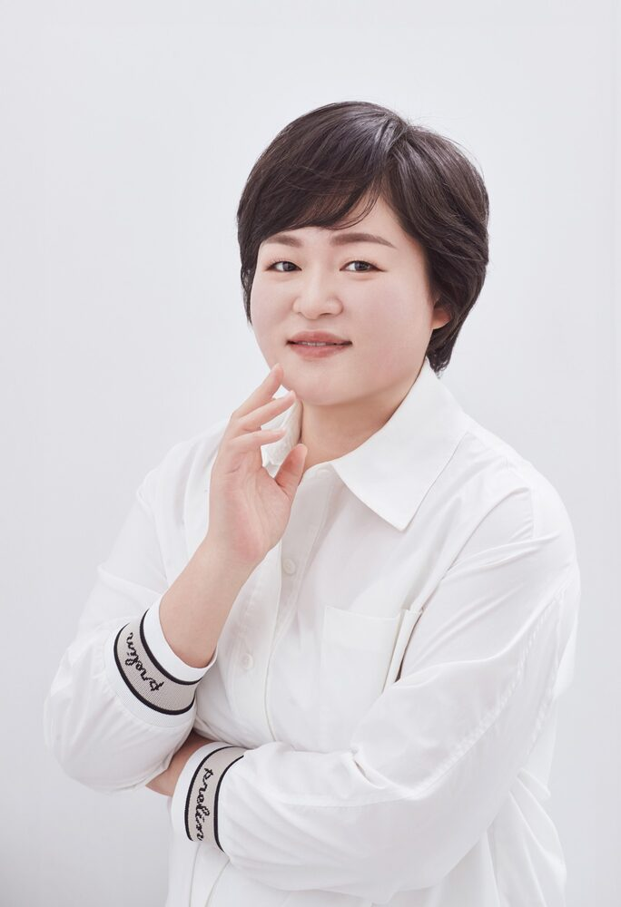

사람을 돌보는 일에서
교육을 돌보는 일로
성향미의 경력은 사회복지 현장에서 시작해 웰니스 창업, 아로마 전문 강사 활동을 거쳐 지금의 REAL 팀 리더로 이어지고 있습니다. 아래는 사실에 기반한 경력 흐름입니다.

경력 흐름
사회복지사
사회복지 현장에서 다양한 사람들을 만나며, 사람을 이해하고 돌보는 일의 기본기를 쌓았습니다. 경남대학교에서 사회복지학(응용사회학) 학사를, 인제대학교에서 사회복지학 석사를 마쳤습니다. 2003년 사회복지사 1급, 2008년 요양보호사 1급 자격을 취득했습니다.
건강의 위기, 다시 선 삶의 방향
사회복지사로 일하던 중 건강의 위기를 겪으며 삶의 방향을 다시 고민하게 되었습니다. 이 시기의 경험은 이후 웰니스·자기돌봄 교육에 대한 관심으로 이어졌습니다.
웰니스 창업 — 리얼로푸드앤바디랩
주스·음식·운동·아로마를 접목한 웰니스 브랜드 '리얼로푸드앤바디랩'을 창업하며 교육과 사업을 함께 고민하는 시야를 넓혔습니다. 로푸드 요리, 채식베이킹, 반려견 수제간식 등 생활 밀착형 웰니스 프로그램을 직접 운영했습니다.
아로마 전문 강사로 성장
2017년 국제웰니스교육협회, 2019년 국제아로마임상협회 대표강사로 활동을 시작했고, 같은 해 한국항노화협회 이사를 맡았습니다. 2020년 NAHA(국제아로마테라피스트연맹) 레벨 1·2 과정을 이수하며 아로마테라피를 전문적으로 학습했고, 이후 천연아로마전문가, 브레인요가지도사, 운동영양지도사 등 다수의 관련 자격을 취득했습니다. 2018년에는 지역사회복지 활동으로 국회의원상(민홍철) 표창장을 받았습니다.
REAL 팀 리더 · 교육자로서의 확장
지금은 REAL 팀을 이끌며, 함께하는 강사진과 교육 생태계를 만들어가고 있습니다. 동아대학교 국제전문대학원 글로벌다문화 전공 박사과정에 재학 중이며, 한국승강기대학교 선샤인융합학부 입시담당교수로서 아로마융합케어 평생교육전공(2년제, 전문학사 학위·평생교육사 2급 과정)의 신입생을 모집하고 있습니다. 교육과정과 교재를 준비해 2027년부터 관련 교수 활동을 이어갈 예정입니다.
교육을 대하는 태도
REAL의 교육은 과장된 효과나 수익을 약속하지 않습니다. 대신 현장에서 검증된 경험을 바탕으로, 꾸준히 실천할 수 있는 교육 내용을 전달하는 것을 원칙으로 합니다.
강의 현장마다 기관과 교육 대상의 상황이 다르다는 것을 전제로, 매번 기관의 상황에 맞춰 내용을 조정하는 방식으로 교육을 설계합니다. REAL 팀은 존중(Respect), 공감(Empathy), 진정성(Authenticity), 경청(Listening)을 운영 철학으로 삼고 있습니다.
주요 활동 분야
아로마융합케어 평생교육
한국승강기대학교 아로마융합케어 평생교육전공의 입시를 담당하며 교육과정을 준비하고 있습니다.
강사 양성
국제웰니스교육협회·국제아로마임상협회 대표강사로서 교육 현장에서 활동할 강사를 양성합니다.
저술
DREAMS, REAL; 말보다 먼저 닿는 향기 등 저서를 출간했습니다. 자세한 내용은 저서·강연 페이지를 참고해 주세요.
웰니스 교육
학교, 공공기관, 기업, 복지기관 등 기관 단위의 웰니스·감정케어 교육 프로그램을 기획하고 진행합니다.